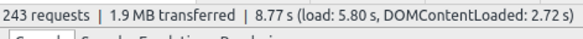

Who am I?
- Sales Engineer & Developer at Caktus Group in Durham, NC
- Former applications analyst at UNC Chapel Hill
- Co-developer of eduCommons OpenCourseWare platform at Utah State University
Outline
- What can you do??
- What is a traffic spike?
- Where and How to prepare
Flash Crowd
- Publicly available teleportion booths
- Near instant congregations of 1000s of people
Traffic Spike
- Sudden urge in demand from your users
- Distributed Denial of Service
Example — Shark Tank
|
|
|
Villy Custom
|
Strategies
- Horizontal Scaling
- Vertical Scaling
- Performance Tuning
Horizontal Scaling
Vertical Scaling
| Single Node | |
| Additional CPUs | |
| Additional RAM | |
| Additional storage |
Horizontal Scaling
| PROS | CONS |
|---|---|
|
$$$ Increased durability Easier to upgrade |
larger topology |
Vertical Scaling
| PROS | CONS |
|---|---|
|
Lower power consumption Easier to implement |
$$$ Single Point of Failure (SPOF) Limited upgrade potential |
Performance Golden Rule
“80-90% of the end-user response time is spent on the frontend.”
— Steve Souders, CPO @ Fastly
General Tuning Rules
- Single person can accomplish
- Does not require complex processes
- Minimal or zero ongoing maintenance efforts
Best Practices
Web pages are only getting bigger....
JS
CSS
Images
Request ⇄ Response

CNN vs Stack Overflow
Most visitors during a traffic spike will have an unprimed cache

Added Overhead on Mobile!
3G still the most prevalent mobile spectrum

HTTP compression

HTTP compression

Browser: Accept-Encoding: gzip, deflate
Response: Content-Encoding: gzip
HTTP compression Apache mod_deflate
SetOutputFilter DEFLATE
SetEnvIfNoCase Request_URI \.(?:gif|jpe?g|ico|png)$ \ no-gzip dont-vary
SetEnvIfNoCase Request_URI \.(?:exe|t?gz|zip|bz2|sit|rar)$ \no-gzip dont-vary
SetEnvIfNoCase Request_URI \.pdf$ no-gzip dont-vary
BrowserMatch ^Mozilla/4 gzip-only-text/html
BrowserMatch ^Mozilla/4\.0[678] no-gzip
BrowserMatch \bMSIE !no-gzip !gzip-only-text/html
HTTP compression nginx
gzip on;
gzip_comp_level 1;
gzip_proxied any;
gzip_min_length 1100;
gzip_buffers 16 8k;
gzip_types text/plain text/html text/css application/x-javascript text/xml application/xml application/xml+rss text/javascript;
# Disable for IE < 6 because there are some known problems
gzip_disable "MSIE [1-6].(?!.*SV1)";
# Add a vary header for downstream proxies to avoid sending cached gzipped files to IE6
gzip_vary on;
Sidebar
Developer Tools
- Yahoo YSlow
- Google PageSpeed Insights
- GTmetrix
Reduce Number of HTTP Requests
One endpoint, many assets
- JS
- CSS
- Images
Compression Example
{% load compress %}
{% compress css %}
{% endcompress %}
Compression Example
Minification
Optimize and trim!!
a {
background: transparent;
}
a:focus {
outline: thin dotted;
}
a:active,
a:hover {
outline: 0;
}
a{background:0 0}a:focus{outline:dotted thin}a:active,a:hover{outline:0}
Image Sprites
- Combine your background images into a single image
- Use the CSS background-image and background-position properties to display the desired image segment
- though each image is tiny, there is a nontrivial overhead to each request and response
Image Sprites
html>body .img-sprite {
background-image: url(./path/to/sprites.png);
}
.flag-sprite, .img-sprite {
background-repeat: no-repeat;
background-color: transparent;
}
#nav-mail {
background-position: -43px -66px;
}
Image Sprites
Stitches- Web based utility to create spritesheets
SVG Image Sprites
- Current browsers support SVG
- Exponentially smaller and scalable
Use Appropriate Image Types
- JPEG: Photographs
- PNG: Generated images (charts, logos, etc.) or transparency (image overlays)
- GIF: Animation required
Misuse
 |
 |
| Type: PNG | Type: JPEG |
| Size: 111.8kB | Size: 14.3kB |
| 8x | |
Stylesheet Placement
- Place in head section of DOM
- Progressive rendering
- Progress indicator for end user
<html>
<head>
</head>
<body>
</body>
</html>
Javascript Placement
- Place right before </body> section of DOM
- JS download is blocking
<html>
<body>
<script src="../../../conf/themes/reveal.js/js/reveal.min.js"></script>
</body>
</html>
Parellization
To shard or not to shard?
- Split resources across multiple domains
- shard1.domain.com
- shard2.domain.com
- Maximizes browser's concurrent connections
Content Storage and Distribution
Amazon Web Services Simple Storage Service (AWS S3)
- Offload entire storage infrastructure
- Scalable
- Pay as you grow
Django-storages
AWS_ACCESS_KEY_ID = os.environ['AWS_ACCESS_KEY_ID']
AWS_SECRET_ACCESS_KEY = os.environ['AWS_SECRET_ACCESS_KEY']
AWS_QUERYSTRING_AUTH = False
AWS_STORAGE_BUCKET_NAME = os.environ['AWS_STORAGE_BUCKET_NAME']
DEFAULT_FILE_STORAGE = 'storages.backends.s3boto.S3BotoStorage'
STATICFILES_STORAGE = 'storages.backends.s3boto.S3BotoStorage'
# these next two aren't used, but staticfiles will complain without them
STATIC_URL = "https://%s.s3.amazonaws.com/" % os.environ['AWS_STORAGE_BUCKET_NAME']
STATIC_ROOT = ''
Content Delivery Network
- collection of web servers distributed across multiple locations
- server selection based on network proximity
Content Delivery Network

Content Delivery Network
| External Storage Backend | CDN itself |
 |
|
CDN Django example
AWS_ACCESS_KEY_ID = os.environ['AWS_ACCESS_KEY_ID']
AWS_SECRET_ACCESS_KEY = os.environ['AWS_SECRET_ACCESS_KEY']
# unsigned URL
AWS_QUERYSTRING_AUTH = False
AWS_STORAGE_BUCKET_NAME = os.environ['AWS_STORAGE_BUCKET_NAME']
DEFAULT_FILE_STORAGE = 'storages.backends.s3boto.S3BotoStorage'
STATICFILES_STORAGE = 'storages.backends.s3boto.S3BotoStorage'
# these next two aren't used, but staticfiles will complain without them
STATIC_URL = "https://%s.s3.amazonaws.com/" % os.environ['AWS_STORAGE_BUCKET_NAME']
STATIC_ROOT = ''
AWS_S3_CUSTOM_DOMAIN = 'sXXXXX.cloudfront.net'
Cache
- A temporary storage of web assets
- Reduce bandwidth usage
- Reduce server load
- Reduce lag
Server Response
Cache Control Directives
- max-age: time to live in seconds
- public: mark asset as cacheable
- private: OK for browser to cache, not an intermediary
- no-cache: validate Etag token else redownload
- no-store: disallow caching (private data)
Cache Invalidation
“There are only two hard things in Computer Science: cache invalidation and naming things.
”
— Phil Karlton, Chief Curmudgeon @ Netscape
Cache Invalidation
Application Cache
- Full Page
- Page Fragments
- Low level API
Application Cache Setup
- Memcached — Caching server
- Key Value Store
{'pageX': 'a bunch of HTML'}
Full Page Cache
given a URL, try finding that page in the cache
if the page is in the cache:
return the cached page
else:
generate the page
save the generated page in the cache (for next time)
return the generated page
Full Page Cache
from django.views.decorators.cache import cache_page
@cache_page(60 * 15)
def my_view(request):
# expensive business logic here
Page Fragment Cache
- Fine grained control
{% load cache %}
{% cache 500 sidebar request.user.username %}
.. sidebar for logged in user ..
{% endcache %}
Low Level API caching
- Full/Partial Page Overkill
- Complex business logic
Low Level API caching
from django.core.cache import cache
def my_view(request):
active_users = cache.get('active_users')
if active_users is None:
active_users = get_active_users(days=5, number=6)
cache.set('active_users', active_users, 60 * 60)
HTTP Accelerator
- Reverse Proxy
- Retrieves resources on behalf of a client from server(s)

Varnish
- HTTP Accelerator
- Follows cache directives
- Load Balancer
- round robin
Varnish Configuration
backend nginx01 {
.host = "104.131.82.132";
.port = "80";
.probe = {
.url = "/";
.interval = 5s;
.timeout = 1 s;
.window = 5;
.threshold = 3;
}
}
backend nginx02 {
.host = "104.131.112.28";
...
}
}
director nginx round-robin {
{ .backend = nginx01; }
{ .backend = nginx02; }
}
Backend
- Identify Slow Queries
- django-debug-toolbar in dev
- New Relic or smilar in production
- Async long running processes tasks
Load Testing
- JMeter, Siege, AB
Summary
- Research Best Practices
- Iterative Cycles